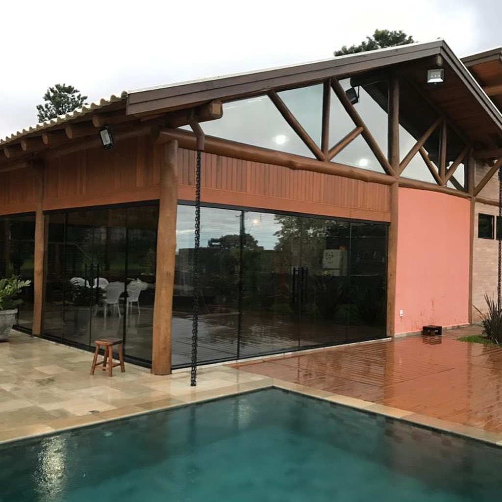

Origin Film · Linha Carbon
Fibra de carbono que não desbota, não interfere em eletrônicos e entrega boa rejeição solar com visual escuro e consistente por anos.

Película Carbon instalada em veículo
Por que a carbon é diferente
A maioria das películas escuras no mercado é tingida: um pigmento é adicionado ao plástico para dar a tonalidade. Esse pigmento degrada com a exposição ao sol e em poucos anos a película começa a ficar roxa, manchada ou bolhada.
A película carbon não usa pigmento. A cor vem de partículas de carbono elemental incorporadas ao filme durante a fabricação. O carbono é quimicamente inerte — não reage com UV, não muda de cor, não degrada. A tonalidade do primeiro dia é a mesma depois de uma década.
Além da estabilidade de cor, a carbon tem boa performance de rejeição solar — em torno de 40 a 60% dependendo do VLT — e bloqueia 99% dos raios UV. É a escolha mais equilibrada entre custo, durabilidade e desempenho.
O que entrega na prática
Em dias de sol forte, um carro com carbon pode ter 5 a 10°C a menos no interior — suficiente para não queimar o banco e reduzir o esforço do ar-condicionado.
Raios ultravioleta danificam o couro do banco, o painel de plástico e a pele com exposição crônica. A carbon elimina virtualmente toda essa faixa.
GPS, celular, 4G, sensores e CarPlay funcionam normalmente. Sem as limitações das antigas películas metalizadas.
Sem manchas, sem desbotamento diferenciado entre janelas. A cor é homogênea em todo o vidro e permanece assim por anos.
Para quem não precisa do máximo desempenho térmico da nanoceramic, a carbon entrega qualidade real a um custo mais acessível.
É possível instalar a carbon como primeira camada e adicionar película de segurança por cima em janelas que precisam de proteção extra.
Perguntas reais de clientes
Fale com a nossa equipe pelo WhatsApp. Orçamento sem enrolação.